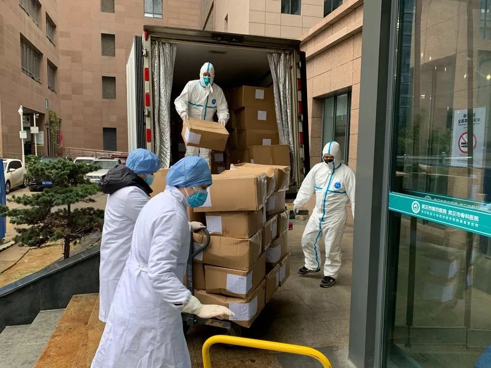

医护人员用文件袋自制护目镜——湖北县镇乡村防疫战
原文链接 备份链接 医疗防护资源不足是常态，各地资源调配需平衡，“灯下黑”区域渐次光亮，但少数地区的疫情宣传依旧不到位 外地务工返乡者最担忧的问题是年后经济收入断流、地域歧视，担心节后可能无法返工 本文首发于南方人物周刊 文 | 本刊记 …

自新型肺炎疫情爆发以来，湖北乃至全国多个省份的医院因防疫物资短缺，向社会发出求助。而另一种声音却在说防疫物资是充足的，没有短缺。一时之间，防疫物资成为了薛定谔的猫。
今日来信的这位作者，便是自发为一线医院筹集防疫物资的一员。从获知疫情，到核查信息，筹集物资，协调物流，她的一步步行动，都是很好的示范。
在这次新型肺炎疫情中，你看到了什么？你经历了什么？不论你身在湖北还是其他地方，在城市还是乡村，在什么工作岗位上，都欢迎你和我们分享你看见的人和事。我们需要很多双的眼睛，才能把时代中的危机看得更加真切。
自征文以来，我们收到了大量来稿，如实写下了他们在疫情期间的所见所闻，这会是一份真挚而沉重的纪录，我们会留存它。
投稿邮箱：anonymous@owspace.com

那么远，却又那么近
撰文：牛天（中国社会科学院）
中国人的乡土之情带有差序格局，一个人的人际关系的亲疏远近，“如同水面上泛开的涟晕一般”，由自己向周边扩散开去，一圈一圈，按与自己距离的远近来划分亲疏。新型冠状病毒爆发伊始，远处的哭声好像没能波及我们的心弦，大家仍沉浸在归家和过年的喜庆中。
1 月 25 日，大年初一。我从未如此急切盼望看到新闻里的消息，看到上海医疗队出征武汉驰援的报道，我鼻子一酸，憋闷自己此时空有一腔热血却没有有效的技能奔赴前线，只能在屋子里响应号召，做一个尽量不给他人添麻烦的老实人。
第一次知道武汉新型冠状病毒是 1 月 19 日，从我硕士研究生的群里：“姐妹们，武汉新闻那么大，咋没人来关心我啊？”我对床的李大丫在群里发出了求关爱的话语。平日瘦小刚直的她“存在感”很低，我们上学是曾为了一张洗澡卡，或是关乎人生理想的虚无缥缈的问题据理力争，谁也不让谁，因为我们知道我们还会再见。
“你百毒不侵。”
“你还说话证明你没事”。
当时我还在北京值班，北京无波澜，家中也没什么疫情，忙于案头工作就戏谑了过去。可是就在我回家之际，财新、三联等媒体接连曝出一线的真实情况，我才警觉了起来。

当上海新增 4 例新型冠状病毒感染病例确诊后，李大丫在群里提醒卉姥，让她注意，我才开始深入关注这些疫情。学新闻出身又在媒体挂职的我，开始海量刷起这方面的新闻，像追剧一样从早到晚，了解越深，越觉得不只是病毒那么简单。此时我也看到了华中科技大学附属同济医院和协和医院联合武汉所有的医院，直接越过武汉市卫计委，公开向社会求助，我起初以为是官方行为，后来才知道这是他们自我救助的最后一根稻草。
“这些医院的公告都是真的，其中还有我做的。我们同事的老公，一采访那些医务人员他们就开始哭，真的缺，缺物资！”李大丫在群里跟我们说。
卉姥一直在行动，她在上海的朋友们已经开始募集物资。同为金牛座的我俩，却有天壤之别。她是湖南的辣妹子，从来都是想到就去做，作为保守金牛的我只是侧目但羡慕。
我们小团体自发的募资，源于 1 月 24 日，大年三十。
李大丫：“卉卉，你有护目镜的资源吗？”
“好的，我去联系”。
这一联系就开始了我们的募资之路。从李大丫的一线消息和以往应对 SARS 的经验，我们达成了一致共识：不能捐钱，全部化为最短缺的物资直奔一线。卉佬凭借着广阔的人脉迅速联系到护目镜资源，在 1 月 25 日 18 点 37 分筹集到了 947 副护目镜，我才知道她的群里，还有各种朋友都在募集物资，并到处讨要武汉医院和个人的联系方式。
我开始有些顾虑，觉得非常时期很多事情不做比做错好。护目镜的来源可靠吗？大家的钱款是否可以有的放矢？我心中一系列的问号开始了。工作之后，事实教育我要成熟持重，三思而后行，管好自己的事情就可以少做错事。可当我被丢在李大丫和卉佬这些昔日的同侪前时，我决定抛开顾虑，能做事的做事，能发声的发声，有一分热，发一分光，不必等候炬火。于是我把可以想到的点陈列在群里：1.捐物资而非捐款；2.李大丫负责确认武汉各大医院物资是否得到实质性的改善，如有改善就将物资发往周边县市；3.找到靠谱的物资（购买资源），最好有实物，发给前方医生核实；4.密切关注官方动态，以免民间物资堵塞官方道路。

1 月 24 凌晨，我编辑了一条朋友圈，没想到迅速得到师弟和朋友的关注，拉了几个小群，师弟那边拉入了一个远在爱尔兰留学的姑娘，她说自己是武汉人，目前这边有华人愿意集体募捐物资就是找不到对接方，于是她给我们发了他们的消息，她说自己是武汉人，这些都是应该做的。另一边是我的朋友“斜杠青年”徐老师，她告诉她北京和西安的朋友，开始在各地募资准备捐赠。从除夕到初一，这两个群一直没停下交流。
我最担心的就是自发找到的物资不符合医用规格，由于前期看的报道和相关知识比较多，我主要负责甄别大家找到的物资的规格，并且通过李大丫联系的一线医生直接核对。
当时，前线求助最多的是需要口罩。我问了我两个学医的朋友，最后确定目前最能帮助一线医护人员的是一次性医用口罩、N95 防护口罩。我也在《三联生活周刊》的文章《武汉医疗物资之困：我们能做什么？》中发现，目前武汉一线的很多医院都在面向社会筹集医疗物资：医用防护口罩需要满足 YY0469-2010 和 GB19083-2010 的标准，而达不到这一标准的口罩会比同规格防雾霾口罩少一层蓝色无纺布，但是就是这层无纺布可以让医用外科口罩拥有比普通防尘口罩更高的抗菌能力。在这期间，我也联系到媒体的同事，看是否有什么办法一起动员。最后屏幕那端发来“谢谢牛老师，我是武汉人。”时，我的眼泪刷地就下来了，我感觉远处的涟晕推到了我的跟前。
就这样，从三十晚上到初一一整天。最终有 1113 元的口罩直接给到了湖北武汉红十字会，1133 元的口罩给了华中科技大学同济医学院附属协和医院总务处，4200 元给到了武汉中心医院消化内科，1400 双鞋套拟初三邮寄到武汉第四医院古田园区。
后来李大丫给我们发来前线医生的感谢微信。不断跳出的筹集物资的信息，迅速把感谢的微信刷走了，可是我依然感到远处的涟漪在一圈圈地靠近我……
截止到这篇文章，群里还在活跃收集着武汉县市的物资缺乏状况。李大丫告诉我们：“武汉五医院已经拿到了物资，很多厂家直接统一调配征用了，但是调配需要时间，所以整体情况还是短缺，尤其是县市。“”卉佬那边，武汉同济医院的刘琼医生发来消息：“政府援助到了一部分。”
后记：
民间募资目前还是存在物资渠道零散、物资质量难测，以及能否有效到达的情况。我们目前了解到，前线的情况有所缓解，但仍然缺乏，尤其是县市，政府物资优先武汉市人满为患的大医院，而调配需要时间，县级城市则无法承载。

点击小程序下单，购买最新上市的《单读 23 · 破碎之家：法国文学特辑》
原文链接 备份链接 医疗防护资源不足是常态，各地资源调配需平衡，“灯下黑”区域渐次光亮，但少数地区的疫情宣传依旧不到位 外地务工返乡者最担忧的问题是年后经济收入断流、地域歧视，担心节后可能无法返工 本文首发于南方人物周刊 文 | 本刊记 …
原文链接 备份链接 【财新网】（记者 黄蕙昭 综合）新型冠状病毒肺炎防控战“全国总动员令”终于落地：今日，中共中央政治局常务委员会召开会议，决定成立应对疫情工作领导小组，向湖北等疫情严重地区派出指导组。 “总动员令”之下，武汉肺炎防控 …
原文链接 备份链接 《人物》记者向多位寻求捐赠的医护人员咨询，他们均表示，很多医院的医用外科口罩库存量大概在一个星期左右，「平常有时口罩也戴一天，如果不去视察病房，有的科室没有戴口罩的需求。」用得不多、存量少，脆弱的库存和供应系统很快被疫 …
原文链接 备份链接 几位口罩行业的从业者，都是在大量微信、电话疯狂轰炸的间歇，接受我们采访的。所有人的语速都异常急促——在过去的一周时间内，他们接过工信部、各地应急办、市级政府的电话；也接过各省医院、药店、大小代理商的电话；还有从未打过交 …
原文链接 备份链接 这是一场无法预知开始、但也许可以看到结局的抗击疫情特殊战役，它不仅仅是疫情爆发地汉口的战役，更是武汉及周边，湖北、乃至全国的战役 文 |《财经》记者 房宫一柳 黎诗韵 管艺雯 宋玮 高洪浩 余洋洋 陈晶 实习生 张凡 …